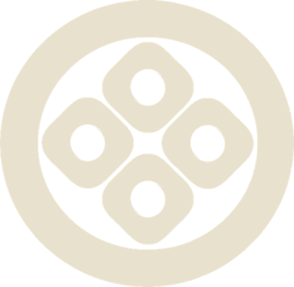
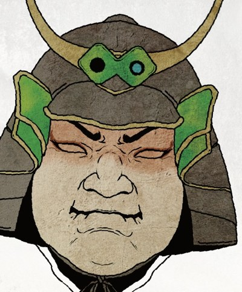
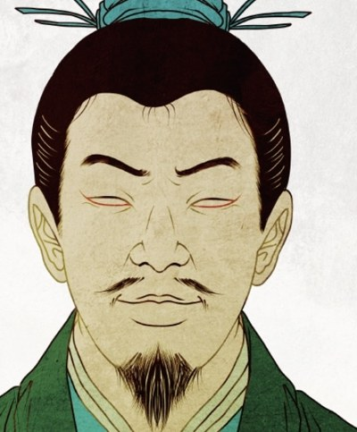

ABOUT
MORINOAとは
モリンガの木のようにやせた土地でも育つ「再生力」と、ノアの箱舟のように大切なものを「守り抜き、次に繋ぐ力」。ふたつを掛け合わせた名が、MORINOAです。
建て直す。盛り直す。
志
傾いた事業をもう一度立たせ、そこに集う人と地域を盛り上げる。事業の再生を通じて、国内外の地域とともに、社会の価値と企業の利益を同時につくるCSV経営を実践します。
構え
止血して終わりの再生では、また傾きます。MORINOAは再生のあとに、維持のしくみと持続の文化まで設計します。
- 再生
- 維持
- 持続
評論家ではなく、共に並ぶ。
分析レポートを置いて帰るコンサルではありません。戦略を描く者と現場で実行する者が一体の「一座」として、 カウンターの中にも、商談の席にも立ちます。自ら店を営む現場知と、深く学ぶ専門知。その両輪が私たちの強みです。

ORGANIZATION
MORINOA 一座
捲るべし
戦略と実行を分業しない。それぞれの座が現場に立つ、それがMORINOAの強みです。


SERVICE
二つの事業
再生を軸に、店を営んで磨いた現場知とIP・デザインの物語で、事業に「もう一度、人が集まる理由」をつくります。
FLOW
再生までの五手
初回のご相談から改善の定着まで。一手ずつ、確実に進めます。
相談
現状とお悩みを伺います。初回相談は無料です。
分析
財務・メニュー・導線を診断し、傾きの正体を特定します。
戦略設計
再生の道筋を一枚の戦略図に。優先順位を明確にします。
実行
現場に入り込み、施策をともに動かします。
改善
数字を見ながら磨き込み、維持と持続のしくみへ。
CONTACT
守るために、
攻める。
事業の相談は、早いほど打てる手が多くなります。 「まだ大丈夫」のうちに、一度お話ししませんか。初回のご相談は無料です。